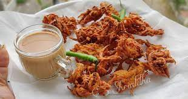

Kanda Bhaji Recipe

Onion pakora or Kanda bhaji, made with onions coated with besan (gram flour) and then deep-fried, is the most popular tea time snack recipe.
Ingredients
- 3 medium onions thinly sliced
- 1 cup gram flour or besan
- 1 cup gram flour or besan
- 1 tsp oil
- 2 green chillies finely chopped
- ½ cup fresh coriander leaves finely chopped
- ½ tsp haldi/turmeric powder
- ½ tsp lal mirch/red chilli powder
- 1 tsp kitchen king masala
- Salt to taste
- Pinch of asafoetida
- 1 tsp ajwain/carom seeds roughly crushed
- 1 tsp jeera/cumin seeds roughly crushed
Steps
- In a large mixing bowl, add besan (gram flour) and rice flour.
- Then, add jeera, ajwain, haldi, red chilli powder, kitchen king masala, asafoetida, and salt into the same bowl.
-
Give it a nice mix and then add finely chopped green chillies, coriander leaves and thinly sliced onions.
- Now, add a tsp of oil and without adding water mix all the dry ingredients with onion. And while mixing squeeze onions with little pressure, it will release the moisture from onions.
- Then, add little water in the bowl and get a proper consistency. For soft and dense pakoras, add little amount of water. And For crispy and crunchy pakoras, add more water till onions can be held together.
- Now, cover and keep the batter aside for 15 to 20 mins.
- Meanwhile, heat the oil in the pan for frying on medium-high flame.
- Now, mix the besan and onion batter with the spoon or fork and put a small drop of besan in oil to check if oil is sufficiently hot.
- When the oil is sufficiently hot, drop the spoonful of onions in the oil and keep the flame on medium.
- Depending on the size of kadhai, drop few more onion batter in the pan and accordingly lower or increase the flame.
- When the pakoras are fried from one side, flip it with the help of a slotted spoon.
- Fry the pakoras from both the sides by flipping it until they are evenly cooked and turns crisp and golden brown in colour.
- Now, remove the fried pakoras with the slotted spoon and drain the excess oil and place it on a kitchen towel.
- Similarly, fry the remaining onion pakoras in the same way.